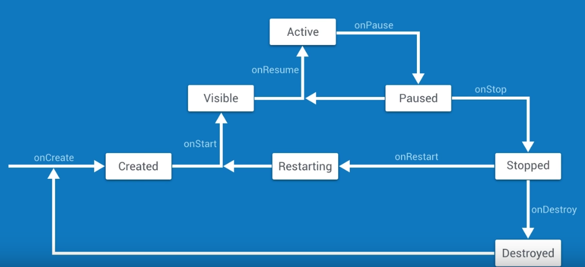

- Deep L-layer neural network
- Forward Propagation in a Deep Network
- Getting your matrix dimensions right
- Why deep representations?
- Building blocks of deep neural networks
- Forward and Backward Propagation
- Parameters vs Hyperparameters
- What does this have to do with the brain?
- assignment: implementing a L-layer NN
Deep L-layer neural network
Layer ...
- Neural Networks Overview
- Neural Network Representation
- Computing a Neural Network's Output
- Vectorizing across multiple examples
- Explanation for Vectorized Implementation
- Activation functions
- Why do you need non-linear activation functions?
- Derivatives of activation functions
- Gradient descent for Neural Networks
- Backpropagation intuition (optional)
- Random ...
What is a neural network?
Example: housing price prediciton.
Each neuron: ReLU function
Stacking multiple layers of neurons: hidden layers are concepts more general than input layer — found automatically by NN ...
Android kills background apps !!

→ onCreate() → Created →onStart() → Visible(can be seen on screen) → onResume() → Active(get focus, can interact with ...
logging
https://developer.android.com/reference/android/util/Log.html
- 5 log levels:
error/warning/info/debug/verbose - error/warning/info ...
Recycler View, Adaper, ViewHolder
rather than creating list items as we scroll ...